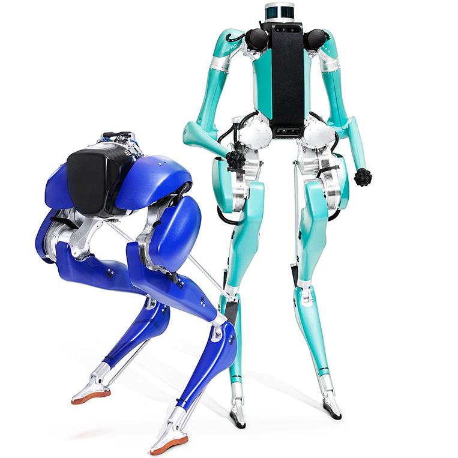
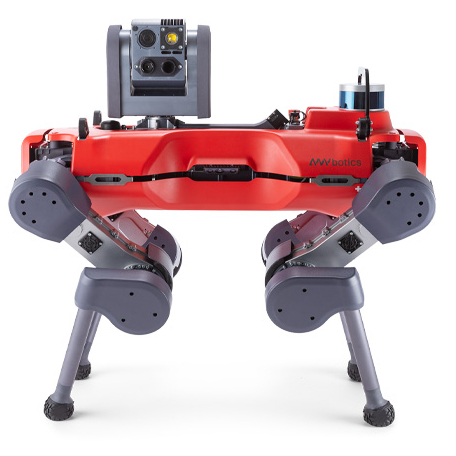
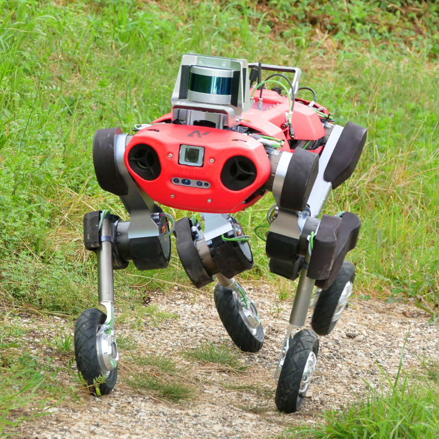
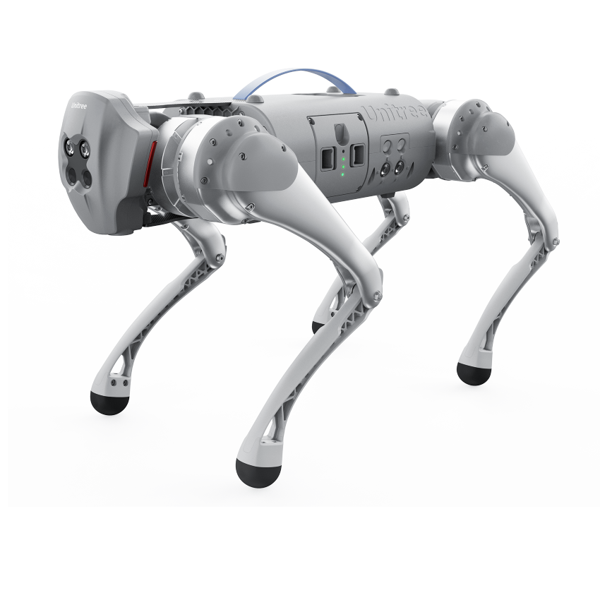
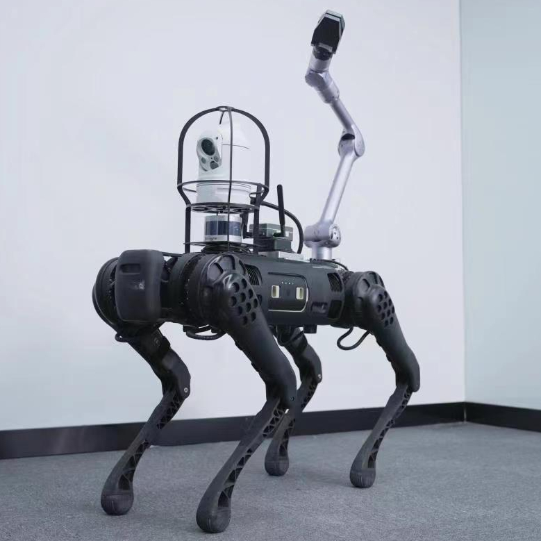
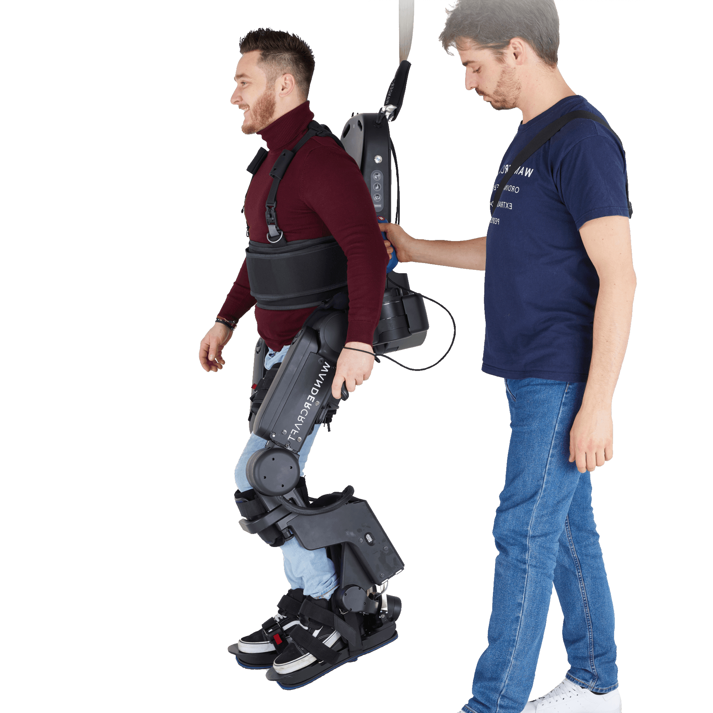

About
Welcome to the 6th edition of the Workshop on Legged Robots.
This is a full day workshop that is held at ICRA 2022 in May 27.
The workshop will be held both in-person and virtual.
The 5th edition of this workshop can be found here,
and the recorded talks can be found here.
Most of the environments surrounding us are rough, unstable, deformable and unstructured, which is dangerous and difficult for humans to access.
In these environments, legged robots have inherent advantages in locomotion over their wheeled or tracked counterparts.
The ability of legged robots to traverse different types of terrains and step over obstacles makes them uniquely suited to perform tasks in various scenarios.
These scenarios include search and rescue missions, inspection in complex and cluttered environments, planetary exploration, agriculture, etc.
Despite their capabilities, there still remain many challenges in making legged robots suitable for a widespread deployment in the real-world.
This workshop continues to investigate the technological ingredients that are missing for an effective widespread deployment of legged robots. Invited speakers from industry and academia will be featured alongside their robots, and papers highlighting problems and solutions in this domain will be solicited.
Topics of Interest:
This workshop continues to investigate the technological ingredients that are missing for an effective widespread deployment of legged robots. Invited speakers from industry and academia will be featured alongside their robots, and papers highlighting problems and solutions in this domain will be solicited.
Topics of Interest:
- Model Predictive Control (MPC)
- Whole-Body Control (WBC)
- Nonlinear Safety-Critical Control
- Reinforcement Learning for Locomotion
- Learning for Perception and Mapping
- Learning Dynamics and Control
- Robotic Systems Design
- Bio-Inspired Robotics
- Novel Actuator Technologies
- Sensor Fusion
- State Estimation
- SLAM in Static/Dynamic Environments
- Optimization-Based Planning
- Vision-Based Planning
- Terrain-Aware Locomotion
- Collision Avoidance
- Disaster Response
- Industrial Inspection
- Payload Delivery
- Robotic Assistive Devices
Control
Learning
Design
Perception & Mapping
Planning
Real-World Applications
We do not support military applications and weapons systems for legged robots.
Program
Tentative
| Time (ET) | Description |
|---|---|
| 08:30 - 08:40 | Welcoming Remarks |
| 08:40 - 09:05 | Wolfgang Merkt - University of Oxford, UK |
| 09:05 - 09:30 | Claudio Semini - Italian Institute of Technology (IIT), Italy |
| 09:30 - 09:55 | Sangbae Kim - Massachusetts Institute of Technology (MIT), USA |
| 09:55 - 10:15 | Amir Patel - University of Cape Town, ZA |
| 10:15 - 10:40 | Coffee Break |
| 10:40 - 11:00 | Robin Deits - Boston Dynamics |
| 11:00 - 11:20 | Jonathan Hurst - Agility Robotics |
| 11:20 - 11:40 | Nicholas Paine - Apptronik |
| 11:40 - 12:00 | Wang Xingxing - Unitree |
| 12:00 - 12:20 | Poster Sessions Spotlights |
| 12:20 - 13:20 | Lunch Break + Demo + Poster Sessions |
| 13:20 - 13:45 | Marco Hutter - ETH Zurich, Switzerland |
| 13:45 - 14:05 | Alexi Li - University of Edinburgh, UK |
| 14:05 - 14:25 | Serena Ivaldi - INRIA, France |
| 14:25 - 14:50 | Coffee Break |
| 14:50 - 15:10 | Timothy Chung - DARPA, USA |
| 15:10 - 15:30 | Team Cerberus |
| 15:30 - 15:50 | Team CSIRO Data61 |
| 15:50 - 16:10 | Team MARBLE |
| 16:10 - 17:10 | Coffee Break + Poster Sessions + Demo |
| 17:10 - 18:00 | Open Discussions + Poster Award + Closing Remarks |
Invited Speakers
click on every speaker for the talk's title and abstract, and for the speaker's bio.
Academic Speakers

Wolfgang Merkt
University of Oxford, UK

Claudio Semini
IIT, Italy

Sangbae Kim
MIT, USA

Marco Hutter
ETH Zurich, Switzerland

Alex Li
University of Edinburgh, UK

Serena Ivaldi
INRIA, France

Amir Patel
University of Cape Town, ZA
Industrial Speakers

Robin Deits
Boston Dynamics, USA

Jonathan Hurst
Agility Robotics, USA

Nicholas Paine
Apptronik, USA

Wang Xingxing
Unitree Robotics, China
DARPA SubTerrain Challenge

CEREBERUS
1st Place

CSIRO Data61
2nd Place

MARBLE
3rd Place

Timothy Chung
DARPA, USA
Robots

Digit
Agility Robotics

ANYMAL
Anybotics

ANYMAL with Wheels
Swiss-Mile

Go1
Unitree

B1
Unitree

Atalante
Wandercraft
Workshop Organizers


This workshop is supported by the IEEE RAS Technical Committees on Whole-Body Control, Mechanism and Design, and Algorithms for Planning and Control of Robot Motion